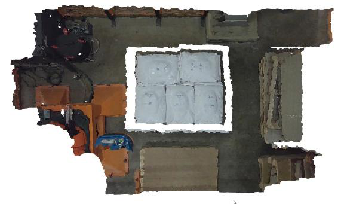
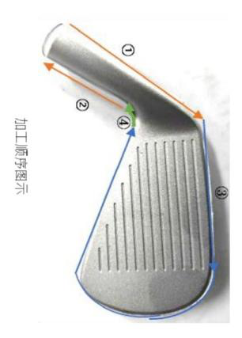
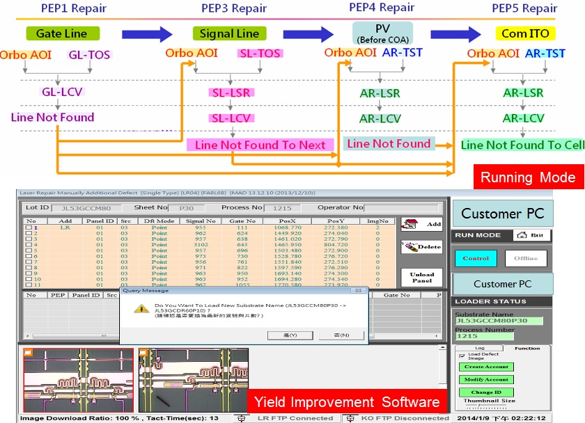

瓶蓋缺陷檢測儀
檢測金屬鋁蓋表面凹陷、破損、表面髒汙、鎖蓋不良、安全環斷裂、螺紋太深或太淺等缺陷。
 PEGASUS
飛馬先進科技
PEGASUS
飛馬先進科技
PRODUCTS & SOLUTIONS
工程實機列舉：AOI 檢測設備、工業自動化與智慧工廠系統。
檢測金屬鋁蓋表面凹陷、破損、表面髒汙、鎖蓋不良、安全環斷裂、螺紋太深或太淺等缺陷。


檢測玻璃瓶口缺口、瓶口破損，以及瓶身上下顛倒等異常狀態。


中文、英文、數字、符號噴印檢測，涵蓋多噴、少噴、噴印錯誤與位置偏移。


動態 3D 成像、自動產出噴膠路徑，每分鐘可處理約 5 個鞋底，提升對位精度與產能穩定度。


平均每分鐘約 5 個飼料包。棧板上排列空間緊湊、兩兩相連； 若使用機械夾爪易刺破軟性包材，因此採用工業規格吸盤進行搬運。


適用粉末冶金零件（如高爾夫球頭）：3D 建模、加工路徑自動規劃執行，精度約 ±0.15 mm。


提供可視化看板、自動配方管理、智能廠房、智慧製造、AI 自動化與智能物流相關整合能力，串接設備與產線數據。